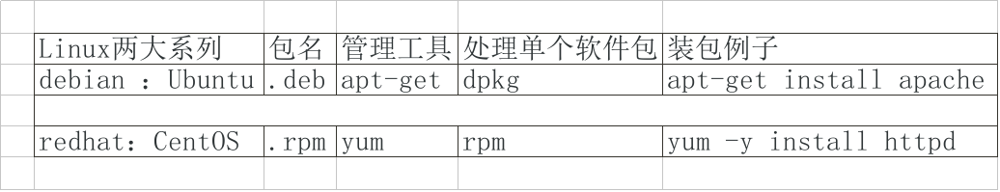

一、软件包管理简介
windows下可以运行的软件是.exe,不能在linux上直接运行，linux上可运行的软件是.rpm。
1、软件包分类（Linux可以安装的）
源码包
脚本安装包（通过编写shell脚本，给用户安装提示，本质上也是源码包）
二进制包（RPM包、系统默认包 ）


源码包和二进制包的区别：
1、源码包可以通过编辑器查看到软件的源代码，二进制包是源码包经过编译之后形成的，不能直接看到源代码（除非反编译）；
2、源码包安装需要编译，编译需要花费大量的时间，二进制包直接可以运行，比较方便。
目前流行的两大Linux系统最主要的区别就是软件包的安装方式不同：

二、RPM包管理-rpm命令管理
1、RPM包的命名规则
包名：httpd
包全名：httpd-2.2.15-15.el6.centos.1.i686.rpm

2、RPM包依赖性


RPM命令管理-查询（常用）


校验和文件提取


三、RPM包管理-yum在线管理
解决手工安装（rpm命令）依赖性问题
1、IP地址配置和网络yum源

setup命令修改IP（redhat特有）

DHCP 上的*代表使用DHCP服务器自动分配IP，不使用可用空格代替*；
在设置完后还需 vi /etc/sysconfig/network-scripts/ifcfg-eth0把ONBOOT="no"改为ONBOOT="yes"（目的是启动网卡，centos的网卡默认是不启动的）
配置完成之后可以重启Linux或者重启网络服务以更改配置。
配置网络yum源（可以不做任何修改，默认已经配置好了）

解释：所有yum源的配置文件都在/etc/yum.repos.d 下,该目录下以.repo结尾的都是yum源配置文件，CentOS-Base.repo是默认yum源（在线的）CentOS-Debuginfo.repo（修复yum源）CentOS-Media.repo（本地光盘yum源）CentOS-vault.repo（虚拟yum源）。
配置网络yum源
打开CentOS-Base.repo文件，发现 文件中含有五个相同的部分，每个部分都是一个网络yum源（默认第一个生效）。
注意：默认enabled属性值为1；

2、yum命令 
注意：这里的关键字是包名，而不是包全明，包名和包全明的概念只在手工配置RPM包部分生效（上一章）；


注意：yum -y update 后面要是不加包名，意思是默认升级所有的软件包，连Linux内核也会升级，Linux内核升级之后需要在本地做一些配置才能正常开机。要是远程使用命令yum -y update，会发现Linux系统怎么也开不开机了，永远也无法连接，导致系统的崩溃。

注意：使用yum卸载，依赖性 a----->b------>c,安装的时候是c--》b--》a，卸载的时候会去先卸载 a在卸载b，最后卸载c
在使用yum进行卸载的时候，会将依赖的软件包全部卸载，如果卸载的依赖包正好有其他的软件包依赖，就会有一些功能不能使用，如果卸载了Linux内核依赖的软件包，就会导致系统崩溃。
服务器配置原则：
最小化安装（不安装多余软件），最好不卸载（慎用yum进行更新和卸载）。

3、光盘yum源搭建
使用本地光盘作为yum源，所有的软件包都从该光盘下载，只能使用光盘中最新版本的软件包。


注意：Linux配置文件的格式都是十分严格的，在yum配置文件中#需要顶头写。
centos8的光盘文件下的AppStream和BaseOS都需要配置yum源文件。

四、源码包管理
1、源码包和RPM包的区别
安装位置不同：
RPM包不需要指定安装位置，安装在默认位置中，在RPM包内部指定，源码包需要人为手工指定安装位置。


2、源码包安装过程


如果是安装一个陌生的软件包（源码包），需要首先去查看说明。


如果make（调用gcc进行编译）报错，可以使用 make clean命令对编译文件进行清理。

五、脚本安装包与软件包选择